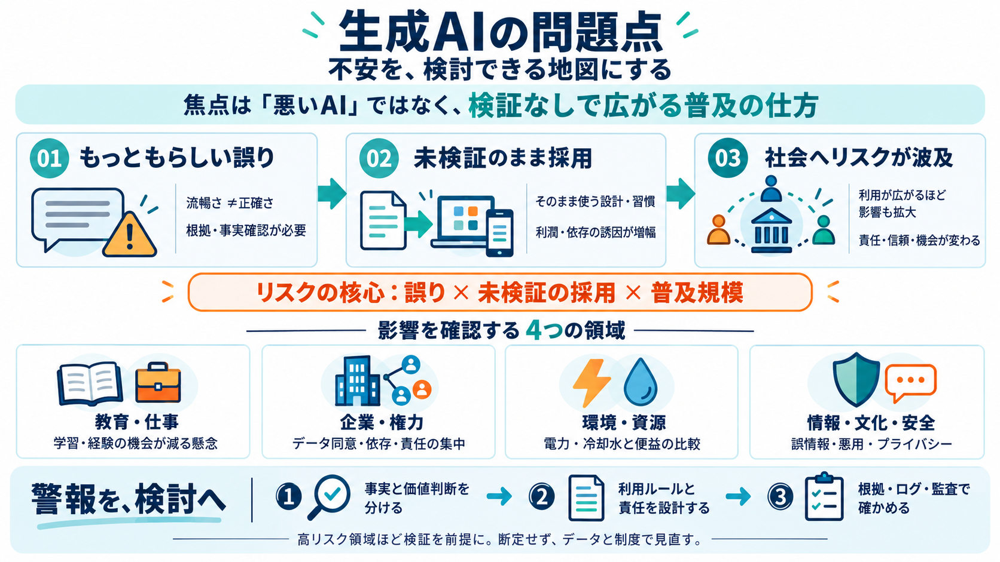

AI Hallucination Guide 2026 — Causes, Types & Solutions | AI Moments
LLM RELIABILITY KNOWN ISSUE MITIGATION GUIDE # AI Hallucination Guide 2026 — Causes, Types & Mitigation AI hallucinati…

LLM RELIABILITY KNOWN ISSUE MITIGATION GUIDE # AI Hallucination Guide 2026 — Causes, Types & Mitigation AI hallucinati…
The rapid adoption of large language models (LLMs) and generative artificial intelligence (AI) systems has brought AI ha…
Generative AI systems, such as chatbots and AI-enhanced search engines, commonly produce hallucinations---generating smo…
reliability enhancement. This approach provides a systematic, scalable methodology for building trustworthy generative A…
Specialized verification models trained specifically to identify hallucinations represent another post-hoc approach (Oh …